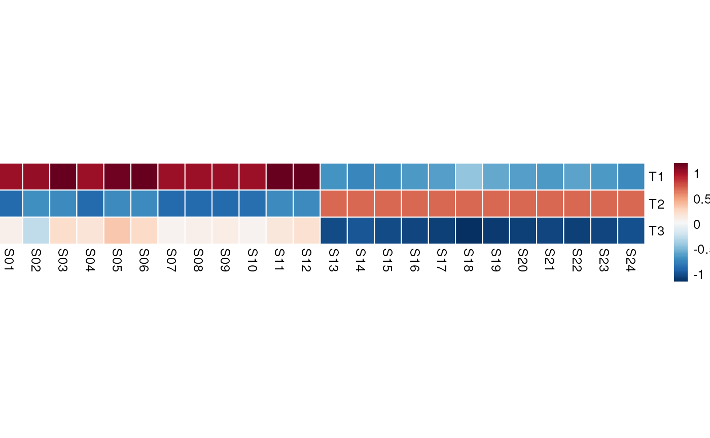

Introduction
Pau Badia-i-Mompel
Heidelberg UniversiyJesús Vélez-Santiago
National Autonomous University of MexicoSource:
vignettes/decoupleR.Rmd
decoupleR.RmdInstallation
decoupleR is an R package distributed as part of the Bioconductor project. To install the package, start R and enter:
install.packages("BiocManager")
BiocManager::install("decoupleR")Alternatively, you can instead install the latest development version from GitHub with:
BiocManager::install("saezlab/decoupleR")Usage
decoupleR (Badia-i-Mompel, Santiago, Braunger, Geiss, Dimitrov, Müller-Dott, Taus, Dugourd, Holland, Flores, and Saez-Rodriguez, 2022) contains different statistical methods to extract biological activities from omics data using prior knowledge. Some of them are:
- AUCell: (Aibar, Bravo Gonzalez-Blas, Moerman, Huynh-Thu, Imrichova, Hulselmans, Rambow, Marine, Geurts, Aerts, van den Oord, Kalender Atak, Wouters, and Aerts, 2017)
- Fast GSEA: (Korotkevich, Sukhov, and Sergushichev, 2019)
- GSVA: (H{ä}nzelmann, Castelo, and Guinney, 2013)
- viper: (Alvarez, Shen, Giorgi, Lachmann, Ding, Ye, and Califano, 2016)
In this vignette we showcase how to use it with some toy data.
Libraries
decoupleR can be imported as:
Input data
decoupleR
needs a matrix (mat) of any molecular readouts (gene
expression, logFC, p-values, etc.) and a network that
relates target features (genes, proteins, etc.) to “source” biological
entities (pathways, transcription factors, molecular processes, etc.).
Some methods also require the mode of regulation (MoR) for each
interaction, defined as negative or positive weights.
To get an example data-set, run:
data <- get_toy_data()
mat <- data$mat
head(mat,5)[,1:5]
#> S01 S02 S03 S04 S05
#> G01 9.3709584 9.3888607 9.8951935 8.7844590 8.431446
#> G02 8.5646982 8.2787888 8.4304691 8.8509076 8.655648
#> G03 8.3631284 8.1333213 8.2572694 10.4142076 8.321925
#> G04 8.6328626 8.6359504 9.7631631 8.0361226 8.783839
#> G05 0.4042683 0.2842529 0.4600974 0.2059986 1.575728
network <- data$network
network
#> # A tibble: 10 × 3
#> source target mor
#> <chr> <chr> <dbl>
#> 1 T1 G01 1
#> 2 T1 G02 1
#> 3 T1 G03 0.7
#> 4 T2 G06 1
#> 5 T2 G07 0.5
#> 6 T2 G08 1
#> 7 T3 G06 -0.5
#> 8 T3 G07 -3
#> 9 T3 G08 -1
#> 10 T3 G11 1This example consists of two small populations of samples (S, cols) with different gene expression patterns (G, rows):
pheatmap(mat, cluster_rows = F, cluster_cols = F)
Here we can see that some genes seem to be more expressed in one group of samples than in the other and vice-versa. Ideally, we would like to capture these differences in gene programs into interpretable biological entities. In this example we will do it by summarizing gene expression into transcription factor activities.
The toy data also contains a simple net consisting of 3 transcription factors (Ts) with specific regulation to target genes (either positive or negative). This network can be visualized like a graph. Green edges are positive regulation (activation), red edges are negative regulation (inactivation):

According to this network, the first population of samples should show high activity for T1 and T3, while the second one only for T2.
Methods
decoupleR contains several methods. To check how many are available, run:
show_methods()
#> # A tibble: 12 × 2
#> Function Name
#> <chr> <chr>
#> 1 run_aucell AUCell
#> 2 run_consensus Consensus score between methods
#> 3 run_fgsea Fast Gene Set Enrichment Analysis (FGSEA)
#> 4 run_gsva Gene Set Variation Analysis (GSVA)
#> 5 run_mdt Multivariate Decision Trees (MDT)
#> 6 run_mlm Multivariate Linear Model (MLM)
#> 7 run_ora Over Representation Analysis (ORA)
#> 8 run_udt Univariate Decision Tree (UDT)
#> 9 run_ulm Univariate Linear Model (ULM)
#> 10 run_viper Virtual Inference of Protein-activity by Enriched Regulon anal…
#> 11 run_wmean Weighted Mean (WMEAN)
#> 12 run_wsum Weighted Sum (WSUM)Each method models biological activities in a different manner,
sometimes returning more than one estimate or providing significance of
the estimation. To know what each method returns, please check their
documentation like this ?run_mlm.
To have a unified framework, methods have these shared arguments:
-
mat: input matrix of molecular readouts. -
network: input prior knowledge information relating molecular features to biological entities. -
.source,.targetand.mor: column names where to extract the information fromnetwork.-
.sourcerefers to the biological entities. -
.targetrefers to the molecular features. -
.morrefers to the “strength” of the interaction (if available, else 1s will be used). Only available for methods that can model interaction weights.
-
-
minsize: Minimum of target features per biological entity (5 by default). If less, sources are removed. This filtering prevents obtaining noisy activities from biological entities with very few matching target features inmatrix. For this example data-set we will have to keep it to 0 though.
Running methods
Individual methods
As an example, let’s first run the Gene Set Enrichment Analysis
method (gsea), one of the most well-known statistics:
res_gsea <- run_fgsea(mat, network, .source='source', .target='target', nproc=1, minsize = 0)
#>
|
| | 0%
|
|======================================================================| 100%
#>
#>
|
| | 0%
|
|======================================================================| 100%
#>
#>
|
| | 0%
|
|======================================================================| 100%
#>
#>
|
| | 0%
|
|======================================================================| 100%
#>
#>
|
| | 0%
|
|======================================================================| 100%
#>
#>
|
| | 0%
|
|======================================================================| 100%
#>
#>
|
| | 0%
|
|======================================================================| 100%
#>
#>
|
| | 0%
|
|======================================================================| 100%
#>
#>
|
| | 0%
|
|======================================================================| 100%
#>
#>
|
| | 0%
|
|======================================================================| 100%
#>
#>
|
| | 0%
|
|======================================================================| 100%
#>
#>
|
| | 0%
|
|======================================================================| 100%
#>
#>
|
| | 0%
|
|=================================== | 50%
|
|======================================================================| 100%
#>
#>
|
| | 0%
|
|=================================== | 50%
|
|======================================================================| 100%
#>
#>
|
| | 0%
|
|=================================== | 50%
|
|======================================================================| 100%
#>
#>
|
| | 0%
|
|=================================== | 50%
|
|======================================================================| 100%
#>
#>
|
| | 0%
|
|=================================== | 50%
|
|======================================================================| 100%
#>
#>
|
| | 0%
|
|=================================== | 50%
|
|======================================================================| 100%
#>
#>
|
| | 0%
|
|=================================== | 50%
|
|======================================================================| 100%
#>
#>
|
| | 0%
|
|=================================== | 50%
|
|======================================================================| 100%
#>
#>
|
| | 0%
|
|=================================== | 50%
|
|======================================================================| 100%
#>
#>
|
| | 0%
|
|=================================== | 50%
|
|======================================================================| 100%
#>
#>
|
| | 0%
|
|=================================== | 50%
|
|======================================================================| 100%
#>
#>
|
| | 0%
|
|=================================== | 50%
|
|======================================================================| 100%
res_gsea
#>
[38;5;246m# A tibble: 144 × 5
[39m
#> statistic source condition score p_value
#>
[3m
[38;5;246m<chr>
[39m
[23m
[3m
[38;5;246m<chr>
[39m
[23m
[3m
[38;5;246m<chr>
[39m
[23m
[3m
[38;5;246m<dbl>
[39m
[23m
[3m
[38;5;246m<dbl>
[39m
[23m
#>
[38;5;250m 1
[39m fgsea T1 S01 0.889 0.075
[4m5
[24m
#>
[38;5;250m 2
[39m norm_fgsea T1 S01 1.24 0.075
[4m5
[24m
#>
[38;5;250m 3
[39m fgsea T2 S01 -
[31m0
[39m
[31m.
[39m
[31m667
[39m 0.548
#>
[38;5;250m 4
[39m norm_fgsea T2 S01 -
[31m1
[39m
[31m.
[39m
[31m11
[39m 0.548
#>
[38;5;250m 5
[39m fgsea T3 S01 -
[31m0
[39m
[31m.
[39m
[31m75
[39m 0.01
#>
[38;5;250m 6
[39m norm_fgsea T3 S01
[31mInf
[39m 0.01
#>
[38;5;250m 7
[39m fgsea T1 S02 0.889 0.076
[4m4
[24m
#>
[38;5;250m 8
[39m norm_fgsea T1 S02 1.29 0.076
[4m4
[24m
#>
[38;5;250m 9
[39m fgsea T2 S02 0 0.977
#>
[38;5;250m10
[39m norm_fgsea T2 S02 0 0.977
#>
[38;5;246m# ℹ 134 more rows
[39mMethods return a result data-frame containing:
-
statistic: name of the statistic. Depending on the method, there can be more than one per method. -
source: name of the biological entity. -
condition: sample name. -
score: inferred biological activity. -
p_value: if available, significance of the inferred activity.
In the case of gsea, it returns a simple estimate of
activities (fgsea), a normalized estimate
(norm_fgsea) and p-values after doing permutations.
Other methods can return different things, for example Univariate
Linear Model (ulm):
res_ulm <- run_ulm(mat, network, .source='source', .target='target', .mor='mor', minsize = 0)
res_ulm
#> # A tibble: 72 × 5
#> statistic source condition score p_value
#> <chr> <chr> <chr> <dbl> <dbl>
#> 1 ulm T1 S01 4.21 0.00180
#> 2 ulm T1 S02 4.07 0.00224
#> 3 ulm T1 S03 3.85 0.00319
#> 4 ulm T1 S04 4.60 0.000979
#> 5 ulm T1 S05 3.90 0.00298
#> 6 ulm T1 S06 3.66 0.00442
#> 7 ulm T1 S07 4.31 0.00153
#> 8 ulm T1 S08 4.65 0.000902
#> 9 ulm T1 S09 4.49 0.00117
#> 10 ulm T1 S10 4.07 0.00225
#> # ℹ 62 more rowsIn this case, ulm returns just an estimate
(ulm) and its associated p-values. Each method can return
different statistics, we recommend to check their documentation to know
more about them.
Let us plot the obtained results, first for gsea:
# Transform to matrix
mat_gsea <- res_gsea %>%
filter(statistic=='fgsea') %>%
pivot_wider_profile(id_cols = source, names_from = condition,
values_from = score) %>%
as.matrix()
pheatmap(mat_gsea, cluster_rows = F, cluster_cols = F, cellwidth = 15, cellheight = 40)
We can observe that for transcription factors T1 and T2, the obtained
activities correctly distinguish the two sample populations. T3, on the
other hand, should be down for the second population of samples since it
is a repressor. This mislabeling of activities happens because
gsea cannot model weights when inferring biological
activities.
When weights are available in the prior knowledge, we definitely
recommend using any of the methods that take them into account to get
better estimates, one example is ulm:
# Transform to matrix
mat_ulm <- res_ulm %>%
filter(statistic=='ulm') %>%
pivot_wider_profile(id_cols = source, names_from = condition,
values_from = score) %>%
as.matrix()
pheatmap(mat_ulm, cluster_rows = F, cluster_cols = F, cellwidth = 15, cellheight = 40)
Since ulm models weights when estimating biological
activities, it correctly assigns T3 as inactive in the second population
of samples.
Multiple methods
decoupleR
also allows to run multiple methods at the same time. Moreover, it
computes a consensus score based on the obtained activities across
methods, called consensus.
By default, deocuple runs only the top performer methods
in our benchmark (mlm, ulm and
wsum), and estimates a consensus score across them.
Specific arguments to specific methods can be passed using the variable
args. For more information check
?decouple.
res_decouple <- decouple(mat,
network,
.source='source',
.target='target',
minsize = 0)
res_decouple
#> # A tibble: 432 × 6
#> run_id statistic source condition score p_value
#> <dbl> <chr> <chr> <chr> <dbl> <dbl>
#> 1 1 mlm T1 S01 3.52 0.00781
#> 2 1 mlm T2 S01 -1.13 0.290
#> 3 1 mlm T3 S01 -0.247 0.811
#> 4 1 mlm T1 S02 3.48 0.00831
#> 5 1 mlm T2 S02 -0.213 0.837
#> 6 1 mlm T3 S02 -0.353 0.733
#> 7 1 mlm T1 S03 3.15 0.0135
#> 8 1 mlm T2 S03 -0.638 0.541
#> 9 1 mlm T3 S03 0.0749 0.942
#> 10 1 mlm T1 S04 3.82 0.00512
#> # ℹ 422 more rowsLet us see the result for the consensus score in the previous
decouple run:
# Transform to matrix
mat_consensus <- res_decouple %>%
filter(statistic=='consensus') %>%
pivot_wider_profile(id_cols = source, names_from = condition,
values_from = score) %>%
as.matrix()
pheatmap(mat_consensus, cluster_rows = F, cluster_cols = F, cellwidth = 15, cellheight = 40)
We can observe that the consensus score correctly predicts that T1 and T3 should be active in the first population of samples while T2 in the second one.
Session information
#> ─ Session info ───────────────────────────────────────────────────────────────────────────────────────────────────────
#> setting value
#> version R version 4.3.1 (2023-06-16)
#> os Ubuntu 22.04.3 LTS
#> system x86_64, linux-gnu
#> ui X11
#> language en
#> collate en_US.UTF-8
#> ctype en_US.UTF-8
#> tz UTC
#> date 2023-09-27
#> pandoc 3.1.1 @ /usr/local/bin/ (via rmarkdown)
#>
#> ─ Packages ───────────────────────────────────────────────────────────────────────────────────────────────────────────
#> package * version date (UTC) lib source
#> backports 1.4.1 2021-12-13 [1] RSPM
#> bibtex 0.5.1 2023-01-26 [1] RSPM
#> BiocManager 1.30.22 2023-08-08 [1] RSPM
#> BiocParallel 1.34.2 2023-05-22 [1] Bioconductor
#> BiocStyle * 2.28.1 2023-09-14 [1] Bioconductor
#> bookdown 0.35 2023-08-09 [1] RSPM
#> bslib 0.5.1 2023-08-11 [1] RSPM
#> cachem 1.0.8 2023-05-01 [1] RSPM
#> cli 3.6.1 2023-03-23 [1] RSPM
#> codetools 0.2-19 2023-02-01 [2] CRAN (R 4.3.1)
#> colorspace 2.1-0 2023-01-23 [1] RSPM
#> cowplot 1.1.1 2020-12-30 [1] RSPM
#> data.table 1.14.8 2023-02-17 [1] RSPM
#> decoupleR * 2.7.1 2023-09-27 [1] Bioconductor
#> desc 1.4.2 2022-09-08 [1] RSPM
#> digest 0.6.33 2023-07-07 [1] RSPM
#> dplyr * 1.1.3 2023-09-03 [1] RSPM
#> evaluate 0.21 2023-05-05 [1] RSPM
#> fansi 1.0.4 2023-01-22 [1] RSPM
#> fastmap 1.1.1 2023-02-24 [1] RSPM
#> fastmatch 1.1-4 2023-08-18 [1] RSPM
#> fgsea 1.26.0 2023-04-25 [1] Bioconductor
#> fs 1.6.3 2023-07-20 [1] RSPM
#> generics 0.1.3 2022-07-05 [1] RSPM
#> ggplot2 3.4.3 2023-08-14 [1] RSPM
#> glue 1.6.2 2022-02-24 [1] RSPM
#> gtable 0.3.4 2023-08-21 [1] RSPM
#> htmltools 0.5.6 2023-08-10 [1] RSPM
#> httr 1.4.7 2023-08-15 [1] RSPM
#> jquerylib 0.1.4 2021-04-26 [1] RSPM
#> jsonlite 1.8.7 2023-06-29 [1] RSPM
#> knitr 1.44 2023-09-11 [1] RSPM
#> lattice 0.21-8 2023-04-05 [2] CRAN (R 4.3.1)
#> lifecycle 1.0.3 2022-10-07 [1] RSPM
#> lubridate 1.9.2 2023-02-10 [1] RSPM
#> magrittr 2.0.3 2022-03-30 [1] RSPM
#> Matrix 1.6-1.1 2023-09-18 [1] RSPM
#> memoise 2.0.1 2021-11-26 [1] RSPM
#> munsell 0.5.0 2018-06-12 [1] RSPM
#> parallelly 1.36.0 2023-05-26 [1] RSPM
#> pheatmap * 1.0.12 2019-01-04 [1] RSPM
#> pillar 1.9.0 2023-03-22 [1] RSPM
#> pkgconfig 2.0.3 2019-09-22 [1] RSPM
#> pkgdown 2.0.7 2022-12-14 [1] RSPM
#> plyr 1.8.8 2022-11-11 [1] RSPM
#> purrr 1.0.2 2023-08-10 [1] RSPM
#> R6 2.5.1 2021-08-19 [1] RSPM
#> ragg 1.2.5 2023-01-12 [1] RSPM
#> RColorBrewer 1.1-3 2022-04-03 [1] RSPM
#> Rcpp 1.0.11 2023-07-06 [1] RSPM
#> RefManageR * 1.4.0 2022-09-30 [1] RSPM
#> reshape2 1.4.4 2020-04-09 [1] RSPM
#> rlang 1.1.1 2023-04-28 [1] RSPM
#> rmarkdown 2.25 2023-09-18 [1] RSPM
#> rprojroot 2.0.3 2022-04-02 [1] RSPM
#> sass 0.4.7 2023-07-15 [1] RSPM
#> scales 1.2.1 2022-08-20 [1] RSPM
#> sessioninfo 1.2.2 2021-12-06 [1] RSPM
#> stringi 1.7.12 2023-01-11 [1] RSPM
#> stringr 1.5.0 2022-12-02 [1] RSPM
#> systemfonts 1.0.4 2022-02-11 [1] RSPM
#> textshaping 0.3.6 2021-10-13 [1] RSPM
#> tibble 3.2.1 2023-03-20 [1] RSPM
#> tidyr 1.3.0 2023-01-24 [1] RSPM
#> tidyselect 1.2.0 2022-10-10 [1] RSPM
#> timechange 0.2.0 2023-01-11 [1] RSPM
#> utf8 1.2.3 2023-01-31 [1] RSPM
#> vctrs 0.6.3 2023-06-14 [1] RSPM
#> withr 2.5.0 2022-03-03 [1] RSPM
#> xfun 0.40 2023-08-09 [1] RSPM
#> xml2 1.3.5 2023-07-06 [1] RSPM
#> yaml 2.3.7 2023-01-23 [1] RSPM
#>
#> [1] /usr/local/lib/R/site-library
#> [2] /usr/local/lib/R/library
#>
#> ──────────────────────────────────────────────────────────────────────────────────────────────────────────────────────Bibliography
[1] S. Aibar, C. Bravo Gonzalez-Blas, T. Moerman, et al. “SCENIC: Single-Cell Regulatory Network Inference And Clustering”. In: Nature Methods 14 (2017), pp. 1083-1086. DOI: 10.1038/nmeth.4463.
[2] M. J. Alvarez, Y. Shen, F. M. Giorgi, et al. “Functional characterization of somatic mutations in cancer using network-based inference of protein activity”. In: Nature genetics 48.8 (2016), pp. 838–47.
[3] P. Badia-i-Mompel, J. V. Santiago, J. Braunger, et al. “decoupleR: ensemble of computational methods to infer biological activities from omics data”. In: Bioinformatics Advances (2022). DOI: https://doi.org/10.1093/bioadv/vbac016.
[4] S. Hänzelmann, R. Castelo, and J. Guinney. “GSVA: gene set variation analysis for microarray and RNA-Seq data”. In: BMC Bioinformatics 14 (2013), p. 7. DOI: 10.1186/1471-2105-14-7. URL: https://doi.org/10.1186/1471-2105-14-7.
[5] G. Korotkevich, V. Sukhov, and A. Sergushichev. “Fast gene set enrichment analysis”. In: bioRxiv (2019). DOI: 10.1101/060012. URL: http://biorxiv.org/content/early/2016/06/20/060012.